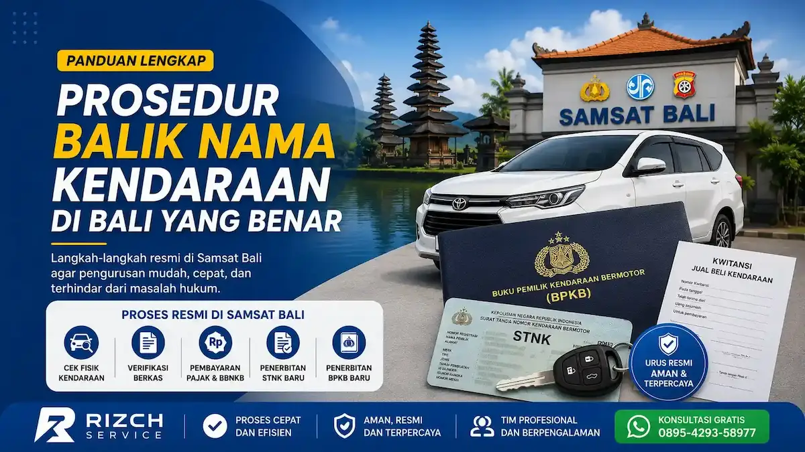

Prosedur Balik Nama Kendaraan di Bali yang Benar
Balik nama kendaraan merupakan proses penting setelah membeli kendaraan bekas, baik motor maupun mobil. Proses ini bertujuan untuk mengganti identitas kepemilikan kendaraan secara resmi di STNK dan BPKB agar sesuai dengan nama pemilik baru.
Di Bali, proses balik nama kendaraan dilakukan melalui Samsat dan Kepolisian dengan beberapa tahapan administrasi yang wajib dipenuhi. Banyak masyarakat masih bingung mengenai syarat balik nama kendaraan, biaya balik nama kendaraan, hingga langkah-langkah resmi yang benar agar tidak mengalami kendala di kemudian hari.
Melalui artikel ini, Rizch Bali akan membahas secara lengkap prosedur balik nama kendaraan di Bali terbaru, termasuk informasi pengurusan STNK hilang, perpanjang STNK Bali, dan layanan administrasi kendaraan lainnya secara lengkap, hingga tips agar pengurusan lebih cepat dan aman.
Apa Itu Balik Nama Kendaraan?
Balik nama kendaraan adalah proses pengalihan kepemilikan kendaraan bermotor dari pemilik lama kepada pemilik baru secara resmi sesuai data administrasi kendaraan yang tercatat di Samsat dan Kepolisian.
Setelah proses selesai, nama yang tercantum pada STNK dan BPKB akan berubah menjadi nama pemilik baru sehingga kendaraan secara hukum sudah menjadi milik pemilik saat ini.
Fungsi Balik Nama Kendaraan
Balik nama kendaraan memiliki banyak manfaat penting bagi pemilik kendaraan, baik dari sisi administrasi maupun hukum.
- Memastikan kendaraan resmi atas nama sendiri
- Menghindari masalah hukum di kemudian hari
- Mempermudah pembayaran pajak kendaraan
- Mempermudah proses jual beli kendaraan berikutnya
- Menghindari penyalahgunaan identitas pemilik lama
- Mempermudah pengurusan STNK hilang atau mutasi kendaraan
Risiko Jika Tidak Balik Nama Kendaraan
Banyak pemilik kendaraan bekas menunda proses balik nama karena alasan biaya atau waktu. Padahal, hal tersebut dapat menimbulkan berbagai masalah di masa depan.
Syarat Balik Nama Kendaraan di Bali
Sebelum datang ke Samsat Bali, pastikan seluruh dokumen persyaratan sudah lengkap agar proses pengurusan berjalan lebih cepat.
Syarat Umum Balik Nama Kendaraan
- KTP asli dan fotokopi pemilik baru
- STNK asli dan fotokopi
- BPKB asli dan fotokopi
- Kwitansi jual beli kendaraan
- Hasil cek fisik kendaraan
- Fotokopi identitas pemilik lama jika tersedia
Syarat Balik Nama Motor di Bali
Untuk kendaraan roda dua, proses administrasi biasanya lebih sederhana dan biaya pengurusan balik nama motor relatif lebih ringan dibanding kendaraan roda empat.
Namun seluruh dokumen tetap harus lengkap terutama STNK, BPKB, dan kwitansi jual beli kendaraan.
Syarat Balik Nama Mobil di Bali
Untuk kendaraan roda empat atau mobil pribadi, Samsat biasanya melakukan pemeriksaan data kendaraan lebih detail terutama jika kendaraan berasal dari luar daerah atau atas nama perusahaan.
Pastikan nomor rangka dan nomor mesin kendaraan sesuai dengan data pada STNK dan BPKB.
Prosedur Balik Nama Kendaraan di Samsat Bali
Berikut langkah-langkah resmi proses balik nama kendaraan di Bali yang umumnya dilakukan di Samsat.
1. Melakukan Cek Fisik Kendaraan
Tahapan pertama adalah melakukan cek fisik kendaraan di Samsat. Kendaraan wajib dibawa langsung untuk pemeriksaan nomor rangka dan nomor mesin.
Petugas Samsat akan melakukan gesek nomor rangka dan nomor mesin sebagai syarat administrasi balik nama kendaraan.
2. Menyerahkan Berkas Administrasi
Setelah cek fisik selesai, seluruh dokumen kendaraan diserahkan ke loket administrasi balik nama.
Petugas akan melakukan verifikasi data kendaraan dan identitas pemilik baru.
3. Pembayaran Pajak dan Bea Balik Nama
Jika seluruh data sudah sesuai, pemilik kendaraan akan menerima rincian biaya balik nama kendaraan Bali dan pajak kendaraan.
Biaya yang dibayarkan biasanya meliputi:
- Pajak Kendaraan Bermotor
- SWDKLLJ
- Administrasi STNK
- Penerbitan TNKB atau plat nomor
- Bea Balik Nama Kendaraan Bermotor
4. Penerbitan STNK Baru
Setelah pembayaran selesai, Samsat akan menerbitkan STNK baru atas nama pemilik kendaraan yang baru.
Pada tahap ini kendaraan secara resmi sudah berganti kepemilikan pada data STNK.
5. Pengurusan BPKB Baru
Tahapan terakhir adalah pengurusan BPKB baru di kantor Kepolisian sesuai wilayah kendaraan.
BPKB baru akan diterbitkan dengan identitas pemilik baru sesuai data kendaraan yang telah dibalik nama.
Biaya Balik Nama Kendaraan di Bali
Biaya balik nama kendaraan di Bali berbeda tergantung jenis kendaraan, kapasitas mesin, nilai jual kendaraan, dan status pajak kendaraan.
Komponen Biaya Balik Nama
- Biaya cek fisik kendaraan
- Biaya administrasi STNK
- Biaya penerbitan TNKB
- Biaya penerbitan BPKB
- Bea Balik Nama Kendaraan Bermotor
- Pajak kendaraan bermotor
Estimasi Biaya Balik Nama Motor
Untuk kendaraan roda dua, biaya balik nama motor di Bali umumnya lebih ringan tergantung nilai kendaraan dan pajak yang masih berjalan.
Estimasi Biaya Balik Nama Mobil
Untuk mobil pribadi maupun kendaraan perusahaan, biaya balik nama mobil di Bali biasanya lebih tinggi karena nilai pajak kendaraan dan biaya administrasi lebih besar.
Lokasi Pengurusan Balik Nama Kendaraan di Bali
Berikut beberapa kantor Samsat yang melayani proses balik nama kendaraan di Bali:
- Samsat Denpasar
- Samsat Badung
- Samsat Gianyar
- Samsat Tabanan
- Samsat Bangli
- Samsat Klungkung
- Samsat Karangasem
- Samsat Singaraja
- Samsat Negara
Balik Nama Kendaraan Antar Daerah
Jika kendaraan berasal dari luar daerah, proses biasanya juga berkaitan dengan mutasi kendaraan di Bali.
Balik Nama Kendaraan Atas Nama Perusahaan
Untuk kendaraan perusahaan, diperlukan dokumen tambahan seperti surat perusahaan, NPWP perusahaan, dan surat kuasa apabila pengurusan diwakilkan.
Tips Agar Proses Balik Nama Kendaraan Lebih Cepat
- Pastikan seluruh dokumen asli dan fotokopi lengkap
- Datang lebih pagi untuk menghindari antrean panjang
- Pastikan kendaraan tidak memiliki tunggakan pajak
- Periksa kesesuaian nomor rangka dan nomor mesin
- Gunakan jasa pengurusan terpercaya jika tidak memiliki waktu
- Simpan seluruh bukti pembayaran dan dokumen kendaraan
Jasa Balik Nama Kendaraan Bali Terpercaya
Jika Anda tidak memiliki waktu untuk mengurus administrasi kendaraan sendiri, Rizch Bali siap membantu proses balik nama kendaraan di seluruh Bali dengan layanan cepat, aman, dan profesional.
Kami melayani pengurusan kendaraan pribadi maupun perusahaan mulai dari balik nama motor, balik nama mobil, mutasi kendaraan, perpanjangan STNK, hingga pengurusan dokumen kendaraan lainnya.
Layanan Rizch Bali
- Balik nama kendaraan motor
- Balik nama kendaraan mobil
- Mutasi kendaraan antar daerah
- Perpanjang STNK tahunan
- Perpanjang STNK 5 tahunan
- Pengurusan pajak kendaraan Bali
- Pengurusan STNK hilang
FAQ Seputar Balik Nama Kendaraan di Bali
Syarat umum meliputi KTP pemilik baru, STNK asli, BPKB asli, kwitansi jual beli kendaraan, hasil cek fisik kendaraan, dan dokumen pendukung lainnya.
Bisa, dengan melampirkan surat kuasa serta dokumen identitas pemilik kendaraan dan pihak yang mewakili.
Biaya berbeda tergantung jenis kendaraan, nilai pajak kendaraan, Bea Balik Nama Kendaraan Bermotor, serta biaya administrasi Samsat.
Bisa, namun biasanya perlu melalui proses mutasi kendaraan terlebih dahulu sebelum proses balik nama dilakukan.
Sebaiknya pajak kendaraan diselesaikan terlebih dahulu karena tunggakan pajak dapat mempengaruhi proses administrasi balik nama kendaraan.
Selain layanan balik nama kendaraan, Rizch Bali juga membantu berbagai kebutuhan administrasi kendaraan di Bali dengan proses yang lebih cepat dan praktis.
Butuh Bantuan Balik Nama Kendaraan di Bali?
Hubungi Rizch Bali sekarang untuk konsultasi dan pengurusan balik nama kendaraan dengan proses cepat, aman, dan terpercaya.
Konsultasi Gratis